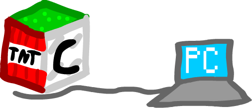

Server has been continuously up for:
ClassiPC is a ClassiCube server for my friends and I. Updates are posted here.
October 23-26, 2026
This update has technically "revived" the server a bit just for longer.
Added:
October 17, 2026
This update has added multiple plugins that basically add a lot of Deltarune content all at once.
Stuff I have added:
October 1-17, 2026
This is the updates between 1.02 and 1.01.
Reason why i didn't really place a specific date on these updates was because I don't really remember.
Added:
October 1, 2026
The first ever update. Added many more blocks for more building.
Blocks added: